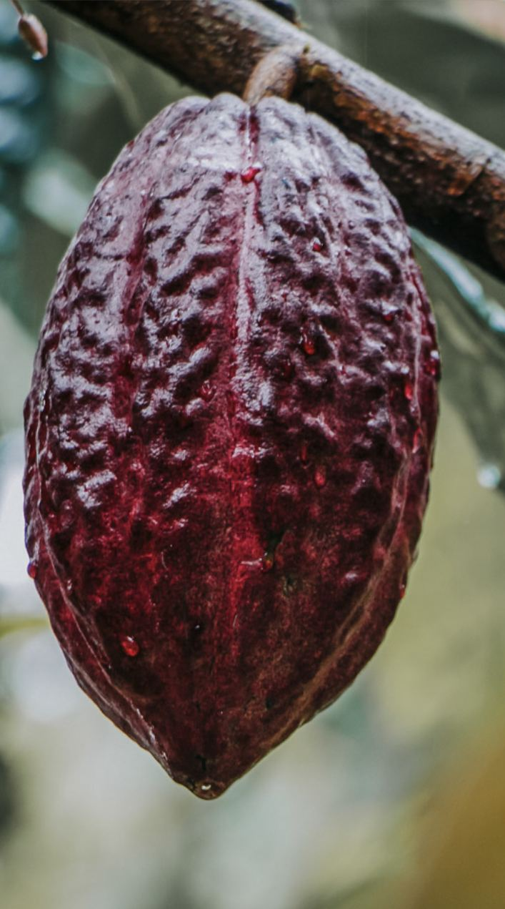
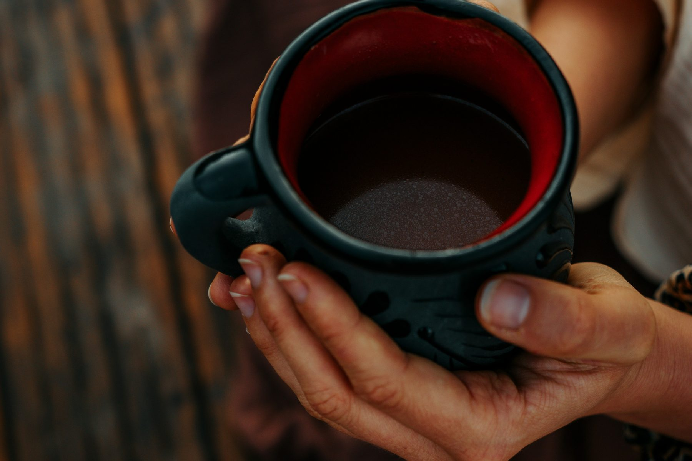
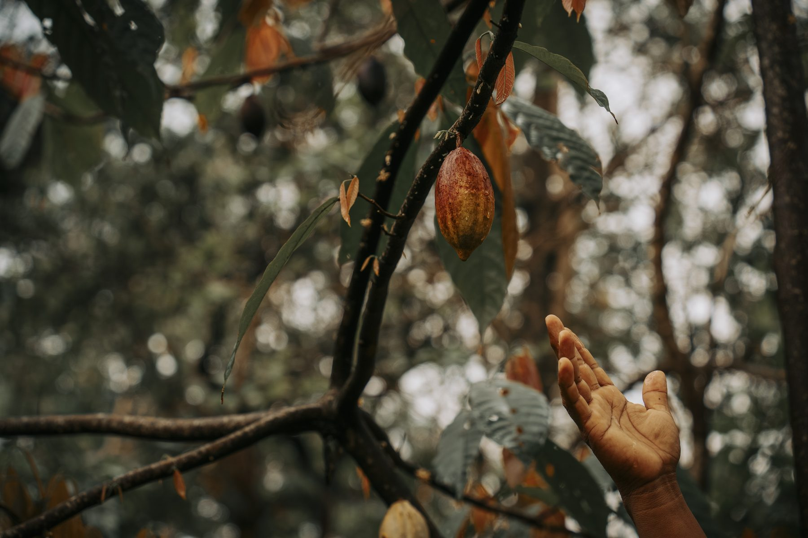

The Spirit of Cacao
About Ceremonial Cacao
For more than 4,000 years, cacao has been grown, fermented, ground, and shared by Mayan hands as a gift from the earth.
Today, most of that story has been lost, replaced by monocultures, exploitation, and candy bars that barely contain cacao at all. Our cacao hasn't forgotten where it came from, and neither will you, once you taste it.
A Story Worth Telling
Cacao Has a Story Most People Never Hear
Cacao has been part of human life for more than five thousand years. The earliest evidence comes from the upper Amazon in what is now Ecuador, where the Mayo-Chinchipe people were using it in ceremony and burial as far back as 3300 BC.
From there it traveled north over millennia, carried by trade, by migration, by the simple fact that people recognized something extraordinary in this plant. The Olmec, one of Mesoamerica's earliest civilizations, knew it. The Maya refined it, developing the fermentation and preparation methods that still define quality cacao today. They called it the food of the gods, used it at births, marriages, and funerals, and wove it into their understanding of life and renewal.
When the Spanish arrived and sweetened it for European taste, that separation began: cacao from its context, from its preparation, from the people and traditions that gave it meaning. What followed was five centuries of industrialization that turned one of the most significant plants in human history into a mass commodity.
In Plain Terms
Ceremonial Cacao
100% pure cacao, minimally processed and stone-ground from whole beans, with nothing added and nothing taken away. Retains the bean's natural cacao butter and the full spectrum of plant compounds that give cacao its warm, heart-opening effect.

A Note on Nutrition
What's Naturally in the Bean
Cacao is a whole food, not a supplement, and we keep it that way. Raw and minimally processed, the bean naturally contains flavanols, a family of plant polyphenols also found in tea and berries, and theobromine, the mildly bitter alkaloid behind cacao's deep flavor. It also carries trace amounts of anandamide, a lipid compound the bean produces on its own. Alongside these, cacao naturally contains minerals such as magnesium, iron, and copper, the same compounds present in the whole bean before anything is stripped away.

The Hidden Cost of Cheap Chocolate
Chocolate has a supply chain problem.
Most chocolate has very little to do with cacao. What begins as one of nature's most nutrient-dense plants is often transformed into a product filled with sugar, flavorings, emulsifiers, and cheap ingredients designed for mass production.
At the same time, many cacao farmers receive only a small fraction of the final value of the products sold around the world. The people who cultivate, harvest, ferment, and dry the cacao, while keeping the wisdom and tradition alive, are often the ones who benefit the least from its success. The result is a system that values volume over quality, and profit over connection.

From Living Forests, Not Monocultures
Where cacao grows shapes how it feels, in your body, and on the planet.
Our cacao trees grow in lush agroforestry systems alongside fruit, timber, and other native plants. Birds, insects, and rich soil life thrive here, and farmers work in close relationship with the land, in conditions that are not only sustainable, but regenerative. No chemicals or pesticides are used, and cacao is harvested by hand, then dried, fermented, and roasted by the people who have worked with it for generations.
Much conventional chocolate, by contrast, is sourced from vast monoculture plantations, where a single crop stretches for acres with little shade or habitat for other species. These systems often rely on heavy agrochemical use, deplete soil health, and leave workers facing harsh, exploitative conditions with little transparency or protection.
Why People Love Ceremonial Cacao
Felt in the heart, felt in the body.
We believe cacao is a wonderful ally for ceremony and meditation practices, as well as small daily rituals. It is often used to connect more with our hearts, allowing for a deeper sense of presence and emotional connection.
Unlike heavily processed chocolate, ceremonial cacao is minimally processed and retains the bean's natural cacao butter and plant compounds. That's why many people choose it as an alternative to conventional hot chocolate or coffee, a way to slow down and reconnect.